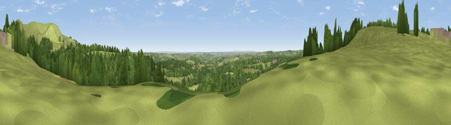

Viewpoint near Wootton
#19551 in England · top 22% of its area beats it · near WoottonThe view, rendered

A 360° render of this exact spot computed from the terrain model, tree cover and land cover — summer colours, afternoon light, calibrated against photographs of famous viewpoints. Real trees, hedges and buildings will differ in detail.
The panorama
Grey silhouette: terrain skyline in each direction (720 bearings, Earth curvature and refraction included). Dashed green: skyline with trees (+15 m) and buildings (+8 m) as obstacles. Blue strip: how far the ground is visible on each bearing.
Where the view opens
Wedge length = distance to the farthest visible ground on that bearing (vegetation-aware). Rings at 10, 25 and 50 km.
What fills the view
54% woodland · 40% grassland · 4% cropland · 1% built-up ·
Angular shares of the visible panorama (visual magnitude), not map area. Landscape diversity 0.39 (0–1 Shannon).
Key numbers
More beautiful places nearby
The staircase of upgrades: each row has a higher view potential than everything closer. Driving times are estimates from straight-line distance, calibrated against real road routing — check an actual route before setting out.
| Place | Direction | Drive | Score |
|---|---|---|---|
| Viewpoint near Wootton | NNE · 2 km | ~4 min | 74.8 |
| Tissington Hill | NE · 10 km | ~19 min | 75.5 |
| Viewpoint near Mow Cop | WNW · 26 km | ~42 min | 78.9 |
| Viewpoint near Mow Cop | WNW · 26 km | ~42 min | 80.2 |
| Viewpoint near Little Wenlock | SW · 58 km | ~81 min | 84.2 |
| The Wrekin | SW · 59 km | ~81 min | 85.0 |
| Viewpoint near Little Wenlock | SW · 59 km | ~82 min | 86.6 |
| North Hill | SSW · 104 km | ~128 min | 86.8 |
53.00202, -1.86622 · source: screening · position refined by local search. Computed location — check access rights before visiting.